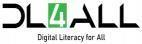

| S/N | NAME OF GROUP | NUMBER OF C/MS |
LOCATION | LGA | NATURE OF ACTIVITIES | ACHIEVEMENTS | REMARKS |
|---|---|---|---|---|---|---|---|
| 1. | Digital Literacy CDS Group | 2 | St. Joseph's Vicinity, Obudu | Obudu | OUTREACH: Digital literacy sensitization was conducted in St. Joseph's Vicinity, Obudu. 2 DLC members engaged youths and students on fundamental mobile digital skills, smartphone navigation for e-learning, accessing academic research materials online, and safe digital communication. | A total of 40 beneficiaries (20 males and 20 females) received direct, practical guidance on utilizing mobile digital tools for academic productivity. | Highly engaging grassroot outreach; community youths showed keen interest in leveraging digital tools for their studies. |
| 2. | Digital Literacy CDS Group | 11 | Obudu Urban Dev. Authority (OUDA), Obudu | Obudu | ADVOCACY & CHAMPIONS TRAINING: Conducted at the Obudu Urban Development Authority (OUDA) focusing on training new Digital Literacy Champions (DLCs) and public sector workers. The 11 corps members sensitized staff and new champions on digital workplace productivity, mobile security, and institutional awareness under the national DL4ALL campaign. | 22 individuals (11 males and 11 females) were successfully mentored on workplace digital applications, online safety hygiene, and champion leadership skills. | Successful institutional engagement; agency leadership commended the NYSC DLC initiative for promoting public sector digital readiness. |
| 3. | Digital Literacy CDS Group | 11 | Obudu Main Market, Obudu | Obudu | MARKET OUTREACH: The 11 DLC members conducted intensive market sensitization at Obudu Main Market. Deployed from shop to shop, each corps member trained traders on utilizing mobile phones for business transactions, digital bookkeeping, safe mobile banking, and tips for detecting and avoiding financial scams. | Empowered a total of 110 market men and women (44 males and 66 females) with practical skills on mobile financial tools and scam prevention. | Great reception from traders; participants appreciated practical business applications of digital payments, and several requested follow-up sessions. |